← Back to Guide
Vegetarian-Friendly Foods
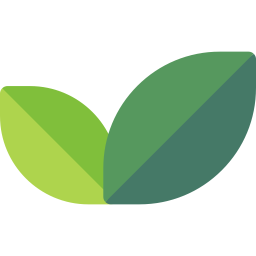
Open Vegan Map
I'm not vegetarian myself, but I put together a list of 100 vegan-friendly restaurants in Seoul. Please double-check before ordering, just in case!
Korean cuisine also has a rich tradition of vegetable-based dishes — a great way to experience the flavors of Korea.
- Temple Food (사찰음식): Traditional Buddhist cuisine made with seasonal vegetables, tofu, mushrooms, and wild greens.
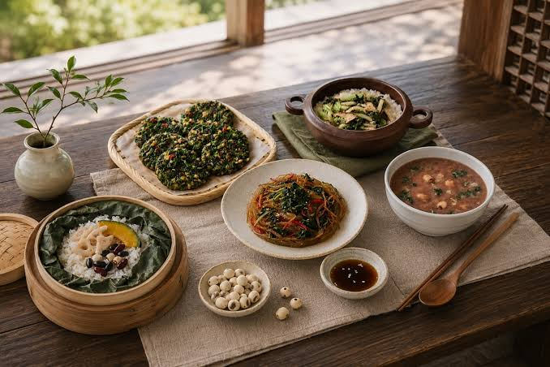
- Mountain Vegetable Bibimbap (산채비빔밥): Mixed rice topped with assorted seasoned mountain vegetables. Ask to hold the egg if needed.
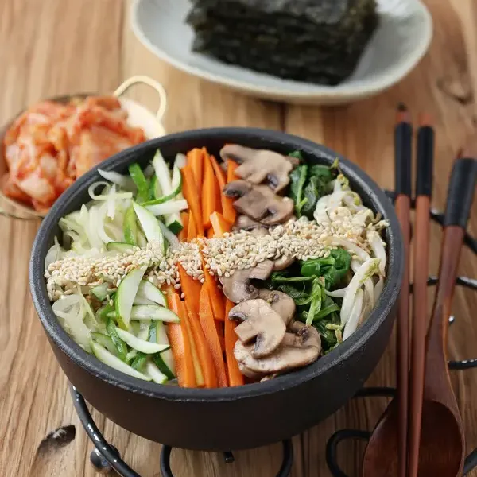
- Gondre Bibimbap (곤드레비빔밥): Rice mixed with Korean mountain thistle (gondre) and soy sauce seasoning.
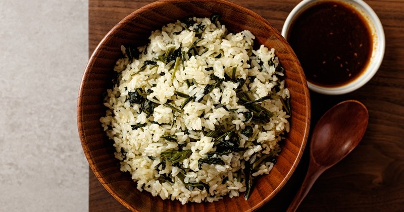
- Perilla Seed Soft Tofu Stew (들깨순두부): Soft tofu stew in a rich, nutty perilla seed broth.
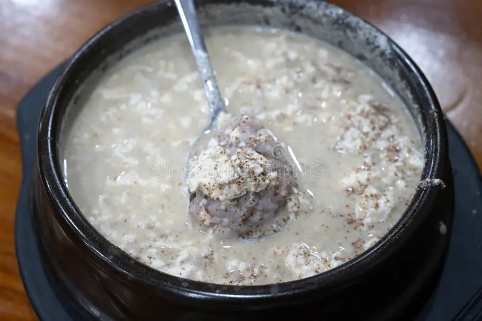
- Tofu Hot Pot (두부전골): A hearty hot pot with tofu, vegetables, and mushrooms.
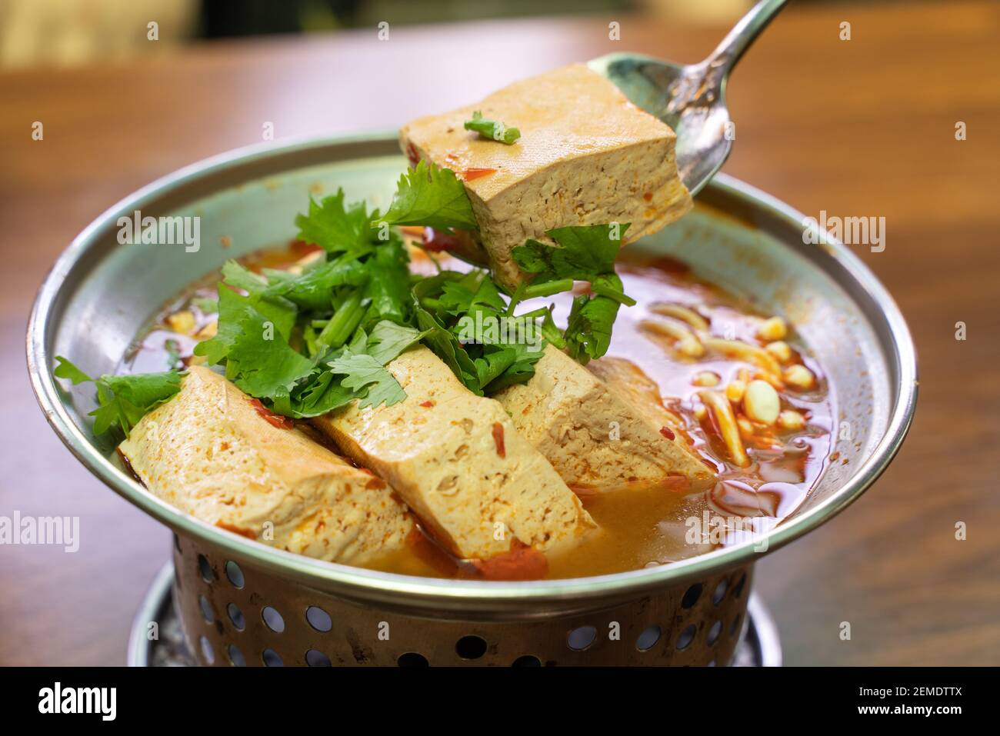
- Mushroom Hot Pot (버섯전골): A hot pot featuring a variety of mushrooms and vegetables.
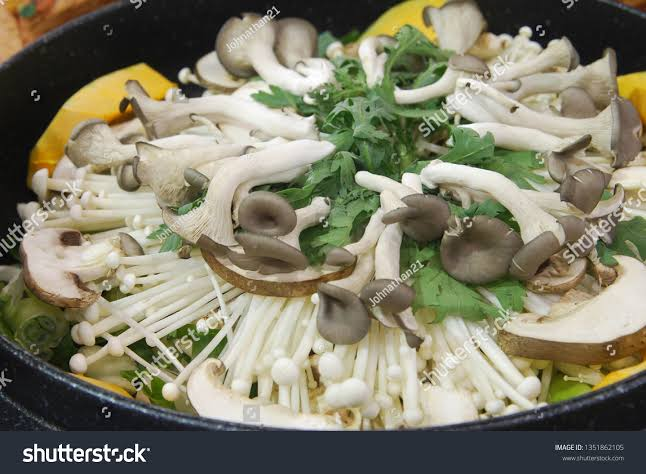
- Kongbiji Jjigae (콩비지찌개): A thick stew made from ground soybean pulp.
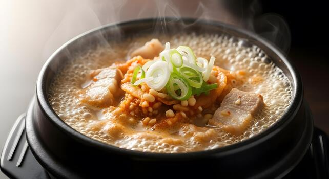
- Kongguksu (콩국수, summer only): Cold noodles served in a creamy soybean broth.
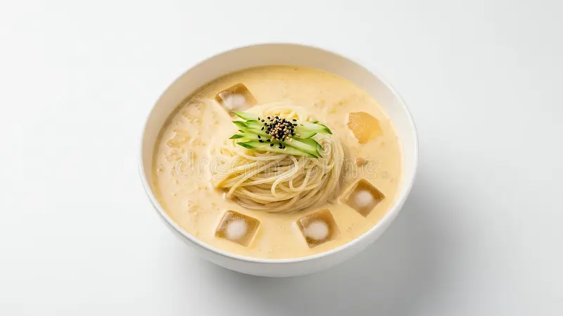
- Acorn Jelly (도토리묵): A savory jelly made from acorn starch, usually served with soy sauce dressing.
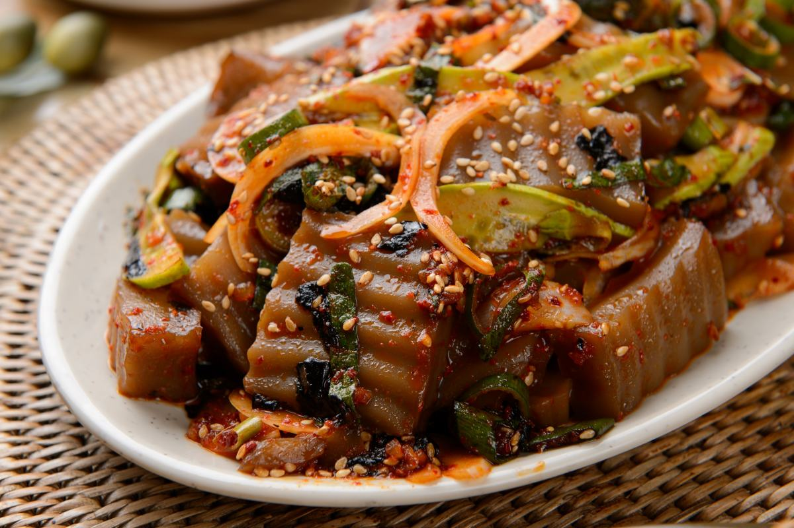
- Buckwheat Noodles (메밀국수 / 막국수): Korean buckwheat noodles, similar to Japanese soba, served chilled in a light broth or with a spicy sauce.
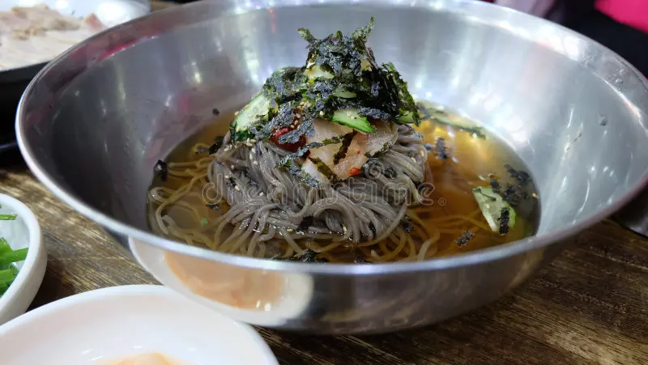